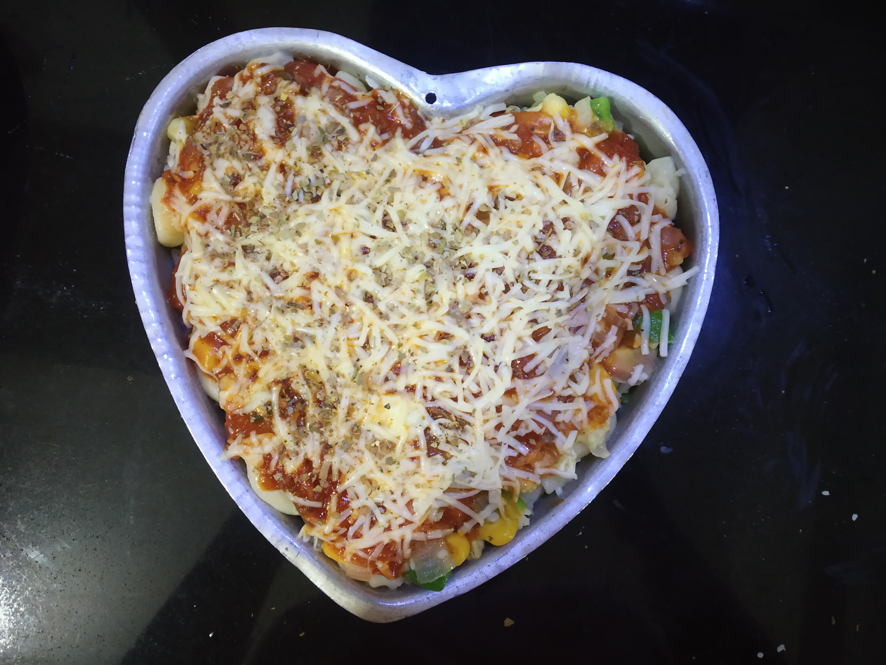

BAKED PASTA
In frame is Baked pasta is a popular casserole with any pasta and a Neapolitan-style tomato-based
or normal pasta sauce characteristic of Italian-American cuisine.
INGREDIENTS :
Chopped red,yellow and green bellpepper, onion
pasta sauce
Any cheese
Maida
Milk
Oregano and black pepper,salt
STEPS ONE CAN FOLLOW(if needed) :
First take a pan and heat 1 spoon oil and butter and toss the veggies
Then heat a small pan and add 1 sppon oil and add maida , cook it little , then add milk by continuesly stirring
After that boil pasta, and make a layer with pasta then veggies then sauce and repeat the layers and then on top add cheese and bake